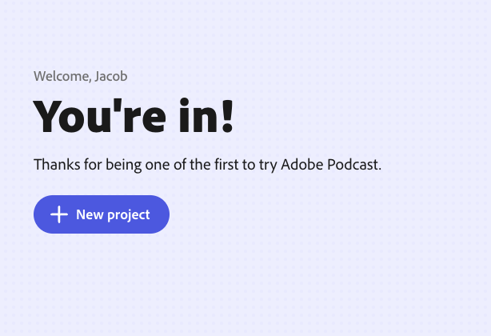
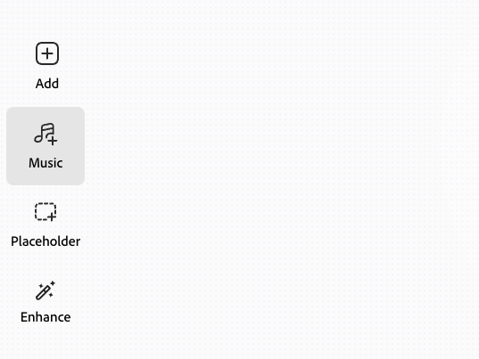
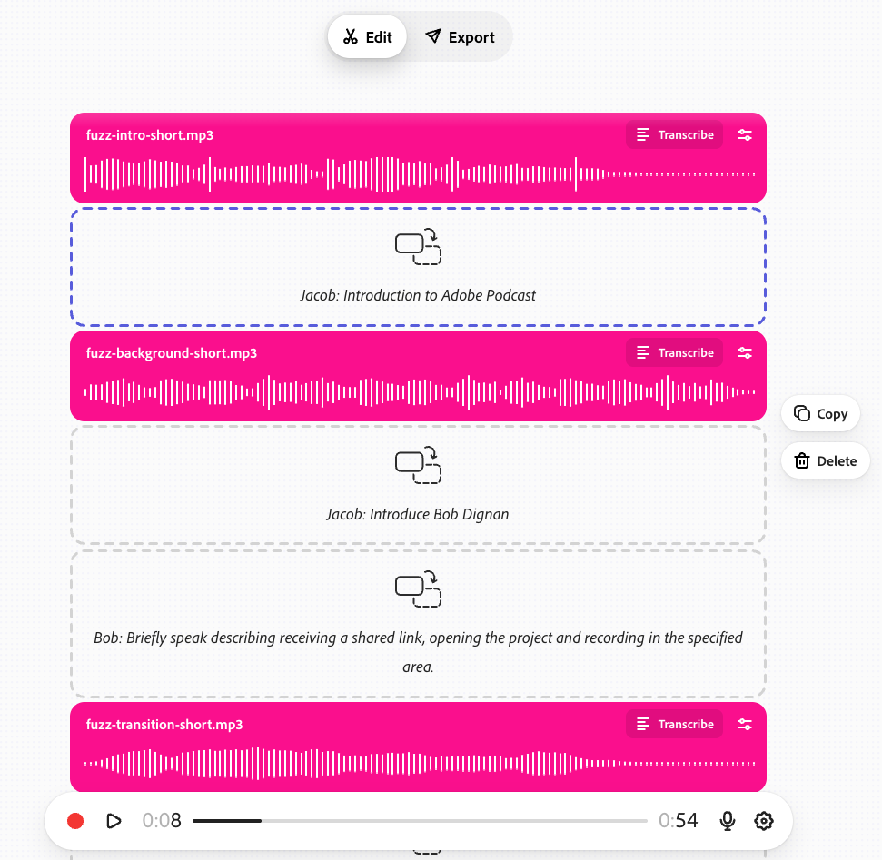
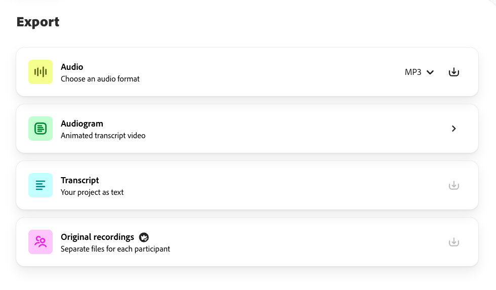

Tool Guide
Adobe Podcast
Introduction
Adobe Podcast is a web-based tool that allows users to record and edit podcast-style content, including exporting audio files, video files, and more. It also has user-friendly tools that allow for processing audio.
Good fit for
- Course narration & mini-lectures
- Project-Based Learning
- Interviews (including remote guests)
- Clubs & student organization media
New prototype
ScrollyMaker
Explore an initial prototype for a scrollytelling authoring tool with a portable story JSON model, live theme tokens, step editing, and a framework-free GSAP/ScrollTrigger runtime preview.
Open ScrollyMaker prototypeWhat it demonstrates
- Reusable components across scroll steps
- Theme variables that update the story globally
- Squarespace-friendly export starter snippet
Pricing
Adobe Podcast Studio is available at the premium level to all Adobe Creative Cloud subscribers (free for UIUC faculty and staff). For users without a Creative Cloud plan, there is a free tier.
Free tier
Helpful for quick cleanup and short projects.
Enhance Speech
- Enhance audio only, no video support
- No bulk processing, upload one at a time
- No strength adjustment
- 30 minutes max duration (up to 500MB), 1 hour max per day
Studio
- Download projects up to 30 minutes, 2 projects per day
- No download of original recordings
- Podcast branded audiograms
Mic Check
- AI analysis of your microphone setup
Premium (Creative Cloud)
Best for sustained teaching workflows and longer projects.
Enhance Speech
- Support for video audio, including MP4 and MOV
- Bulk processing supported
- Fine tune level of processing
- Process 4 Hours daily, files up to 1 GB
Studio
- No download limits on Studio projects
- Download original recordings, speaker-seperated
- Customize audiograms and captions with themes
- Upload custom backgrounds for audiograms
Overview
This lightweight web-browser tool provides a surprising depth of quality and power with a user-friendly interface. Highlights include Record a Podcast, Enhance Speech, Caption Video, Convert Audio to Video, Transcribe Audio & Video, and Edit Audio & Video. All of these tools are accessible from within your browser without requiring specialized audio equipment or software.
Instructional uses
- Collaborative podcast projects
- Personalized audio feedback
- Microlectures
- Student interviews, audio journals, & reflections
Student org / club uses
- Recruitment stories
- Event recaps
- Member spotlights
- Podcast-style series
Organizational uses
- Internal comms updates
- Training narration
- Quick announcements
- Reusable templates
Enhance Audio & Mic Check
One common pain point in course media production (for students and instructors) is limited access to specialized recording equipment. While good microphones help, Adobe Podcast’s Enhance Audio can make a meaningful improvement with minimal setup.
Example (CITL Instructional Media Producer, Jacob)
[COMPARISON VIDEO EXAMPLE]
*** NOTE TO SELF PUT VIDEO DESCRIPTION HERE ***
Why it matters
These tools allow you to record in noisy situations and process audio to improve speech clarity while reducing external noise, all while using non-specialzied equipment like your phone or webcam microphone.
Supported file types
- Audio: .wav, .mp3, .m4a, .aac, .flac
- Video: .mp4, .mov, .m4v
Mic Check (pre-recording)
Record a short test sample and receive feedback on:
- Microphone distance
- Gain
- Background noise
- Echo
Studio
As much as can be accomplished just with Enhance Audio and Mic Check, Adobe Podcast Studio packs in even more—enough to warrant its own section. Let’s dig in together.
Open Adobe PodcastFirst, click the New Project button to get started.

Options unfold quickly. In this example workflow, you can click Music, explore a pack (e.g., “Fuzz”), and select a short intro for your project. You might use a different set, your own music files, or no music at all.
- Adobe music sets can provide a cohesive theme (intros, outros, bumpers, background beds).
- Using your own files can bring a unique musical identity—be mindful of copyright permissions.

With an intro added, you can create your first “event” in the timeline (often organized vertically). To plan the recording, add placeholders from the left interface (e.g., “Jacob: Introduction to Adobe Podcast”) and add background audio as needed.

When it’s time to record, select a placeholder by clicking it, then record. The placeholder becomes the target for your recording, keeping long projects organized and easier to revise later.
Select Export from the top of the window to access export options such as:
- Audio (e.g., mp3)
- Audiogram (animated transcript elements with video output)
- Transcript (text)
- Original recordings as separate participant files (Premium tier only)

Invite Guests
You might have noticed there was a placeholder in the project for Bob. Use Invite Guests (upper-right) to collaborate without requiring guests to sign in to Adobe Podcast. After recording, you can apply the same audio enhancement described earlier to your guests' recordings.
Why this is powerful
- Works asynchronously (guests can record at a convenient time)
- Supports interviews, panels, and student contributions
- Centralizes files in one project timeline
Share (templates for classes)
A useful feature for assignments is the ability to use Share to share your project as a template. Students can edit their own version, but not your original.
Assignment idea
Create a “fictional show” with your source audio, host narration, and placeholders for student segments. Students add commentary into the placeholders, export, and submit to Canvas.
Example template setup:
Instructor: "Next we will hear an excerpt from a 1965 interview with artist Robert Rauschenberg."
[Audio clip from interview plays]
Instructor: "Based on Rauschenberg's statement that he wanted to work in the 'gap between art and life,' how does that change your reaction to his use of everyday street trash in his Combines?"
[Placeholder for student to record response]
Audiograms
One project export format is the Audiogram. The Audiogram converts the audio-driven format of a podcast into an engaging video including visual theme elements. These can be handy for posting and sharing your projects on social media.
Make it your own! Choose from provided themes and visual styles. The premium tier also allows for the ability to upload your own custom images, including brand assets.
Audiogram Example
View our demo project from this guide as an Audiogram:
Additional Features to Explore
Adobe Podcast continues to add additional features and refinements regularly. Some additional features to explore in your projects:
Quick Tips
Text Based Edits: When you delete strings of words from the transcript, the video cuts those same segments out too.
Multitrack Importing: Sreamline your process with recordings you already have by importing multitrack recordings from Zoom, Restream, StreamYard, Riverside, and more!
Quick Clips: In the studio extract a selection of the transcript as an audio clip or Audiogram video. This makes it fast to get short bites of content to repurpose and get more potential out of your media.
Ready-made Templates Adobe also has ready-made templates ready to jumpstart your project in a variety of formats and populate with your own content.
Summary
Adobe Podcast is a useful and user-friendly tool that can support engaging instructional opportunities as well as content creation for organizational needs.
Are you using Adobe Podcast in your instruction?
Do you have a use-case you’d like to share? I’d love to hear from you.
Email: beinbor1@illinois.edu